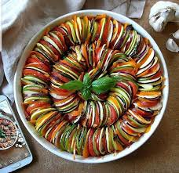

RECEITA RATATOUILLE
IGREDIENTES
-2 abobrinhas
-2 berinjelas
-2 cebolas
-3 tomates
-1 pimentão verde
-1 pimentão amarelo
-1 pimentão vermelho
-azeite a gosto
-alecrim a gosto
-manjericão a gosto
-alho a gosto
-sal a gosto
-louro a gosto
-molho de tomate para cobrir o fundo da forma
MODO DE PREPARO
1-Corte os vegetais em rodelas finas sem as sementes.
2-Cubra o fundo de uma forma com o molho de tomate.
3-Monte tudo intercalando com os vegetais.
4-Amasse o alho e espalhe por cima acrescentando o sal e o alecrim a gosto.
5-Regue com um pouco de azeite e cubra com papel-manteiga ou alumínio.
6-Leve ao forno por 40 minutos a uma temperatura de 180° C a 200° C.
Trilha de programação
